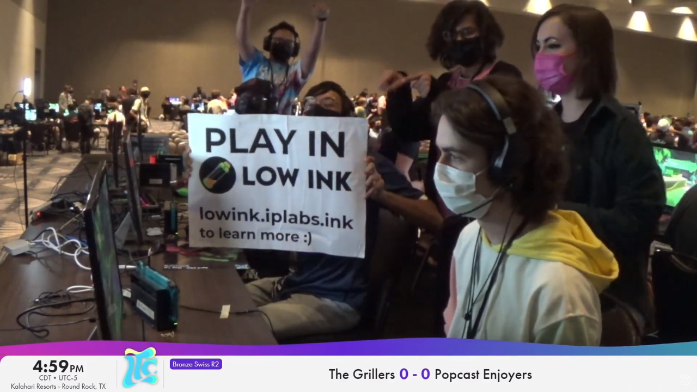
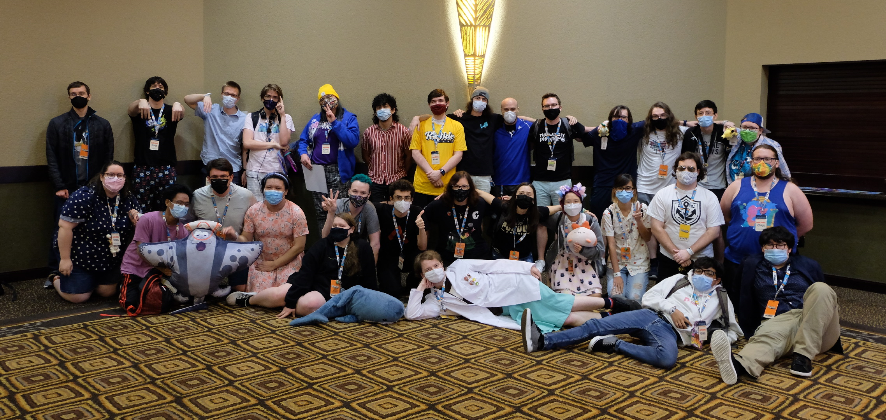
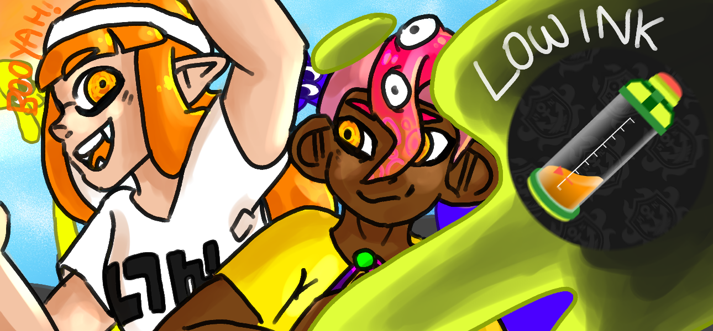
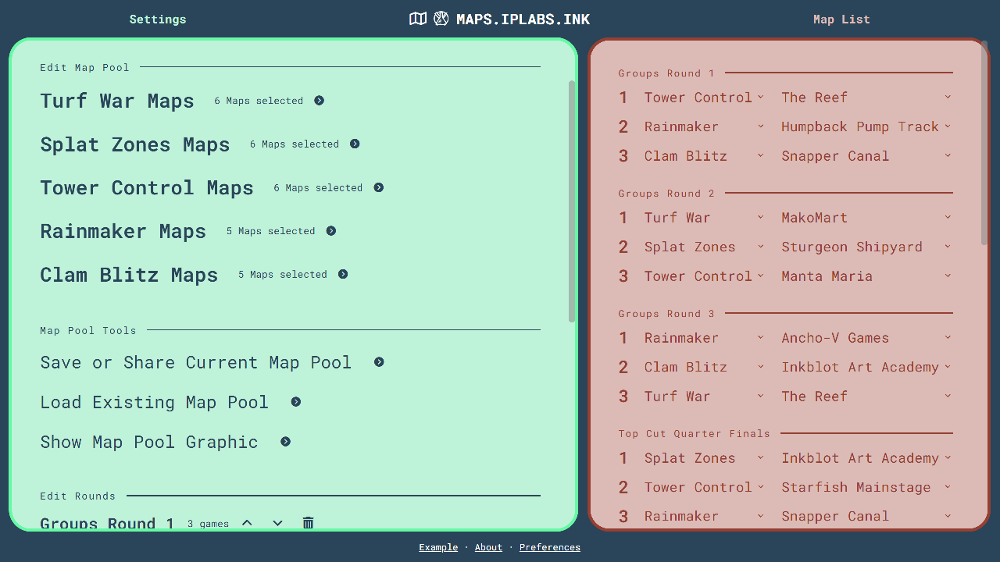
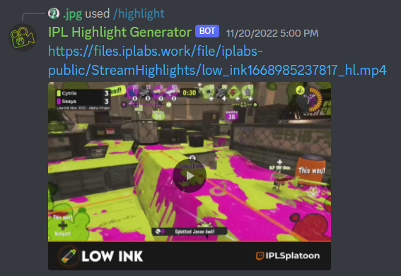

I've been playing Splatoon since the first game launched and instantly fell in love. After the launch of Splatoon 2 in 2018, I decided to explore the scene more. I formed a team named Assault and Pepper, officially entering the competitive Splatoon scene as a player.
I stopped playing with Assault and Pepper in 2020 to pursue tournament organizing around the launch of a new tournament and production organization named Inkling Performance Labs. It was built off the success of a tourney named Low Ink, one of my favorite events to play, and I started staffing in after winning in July 2019. I got promoted from staff to head TO a couple of months after.
As Inkling Performance Labs grows, our production ambitions grow too. We're running both more major and more frequent tournaments. We're also starting to enter the realm of helping in-person events. I'm doing my part by helping with some of the production work the organization needs alongside the tourney organizing I typically handle. Most of the work I put into this scene is with Inkling Performance Labs, check us out at
iplabs.ink

(August 2020 - Head TO as of today)
Inkling Performance Labs' goal is to unite and grow the community by creating high-quality Splatoon tournaments. We want to promote the growth of Splatoon, both in working to bring in new members, along with helping improve those already in the community.
I've been with IPL since its inception. While I mainly run the event Low Ink, I get involved in all events in some capacity. I do the usual tournament organizing a lot, but recently I've been helping create production assets for lots of events, which involves small things like graphics for our Twitter posts to full-on livestream graphics packages.
IPL is full of great talent and even greater people. We're constantly striving to push the scene forward both in online and in-person events. Below is an image of all IPL staff and commentators who were at Riptide 2022.

(Begun staffing 2019 - Head TO as of today)
Low Ink is a two day Splatoon 3 tournament for newer and lower level players. Our goal is to give teams a chance to get into the Splatoon 3 tournament scene and gain valuable competitive experience. This is achieved by barring higher-level teams from playing in this event. Each team is checked over manually to ensure they are at a suitable skill to play. Low Ink has had multiple events with more than 100 teams and is considered one of the biggest tournaments in the scene.
I am a head tournament organizer of Low Ink alongside two good friends. This means I typically oversee the event both on the days of the event and the days leading up to it.

(October 2022 - Maintained today)
Proving Grounds, the sequel to a past IPL tournament named Testing Grounds, is a bi-weekly Splatoon tournament taking place on Friday nights. It includes a small map pool and a format catered to top level play.
My job was to handle all the production needs for this event. I've created nearly all the graphics (not the logo) seen in advertising as well as the stream overlay. The main challenge was how fast we wanted to get PG out the door, since demand for tournaments was at an all time high. I only had a couple days to get the production ready.
(September 2022 - Maintained today)
Swim or Sink is a weekly tournament series aimed at providing players with practice against other teams of varying skill levels. SOS has been running since the creation of IPL, and it was due for a redesign.
This was the project that taught me a lot of the production skills I have today. I've created all the graphics (not the logo) you see on social media and the stream overlay.
(April 2022 - Maintained today)
Creating Splatoon tournament map lists is a headache, and I strongly dislike doing it by hand. I knew I wasn't the only one with this opinion. After numerous past projects trying to create an automated map generator, I've finally perfected the algorithm to create nearly perfect map lists, ending error-prone hand-made map lists in IPL.
maps.iplabs.ink
(December 2021 - Maintained today)
To boost social media engagement, I want to create a way to quickly put tournament clips on the IPL twitter. My solution was to create a discord bot that could take a Twitch clip and convert it into a downloadable video file with our branding added to it. With the help of this tool, any tournament organizer in IPL can take a moment from our livestream and put it on social media in about 1 minute.

(January 2021 - January 2022)
My questionable tournaments were an experiment to try out the weirdest tournament format ideas I could think of. In the year this project was active, I ran the following:
• Fastest Event in the West (January 10, 2021): A best-of-1, single-elimination event. It lasted about 30 minutes.
• Mission Composition (January 24, 2021): An event that has teams face off with entirely random weapon compositions.
• Waiting On Our 5th (February 24, 2021): Teams in this event have a spectator on their team to feed them more info than they'd usually get.
• Fastest Event in the West 2 (January 22, 2022): It was not faster than the first one.
.jpg's questionable tournaments stopped running due to oversaturation in tournaments in the Splatoon scene. Events with unusual formats also stopped being unique. I want to bring back this project, but it's not a high priority.
(December 2020 & December 2021)
High Ink was an idea to bring back past winners of Low Ink in one special production. Its end goal within IPL was to test the limits of our production in one big event. My job was to ensure we had open communication with all the teams we invited and to create trailers of them on social media to create hype.
High Ink 2 was similar to the original High Ink. It had the same goal of pushing the limits of our production with trailers of all teams and an awesome stream with some of the best casters in the scene.
Both High Inks were very time-consuming to produce. I'm proud of how both turned out in the end. However, I am not interested in creating a 3rd event.